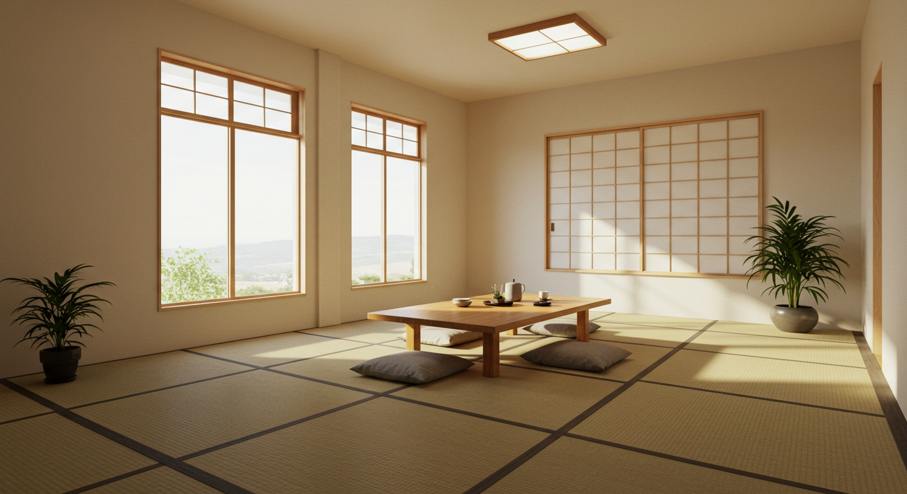
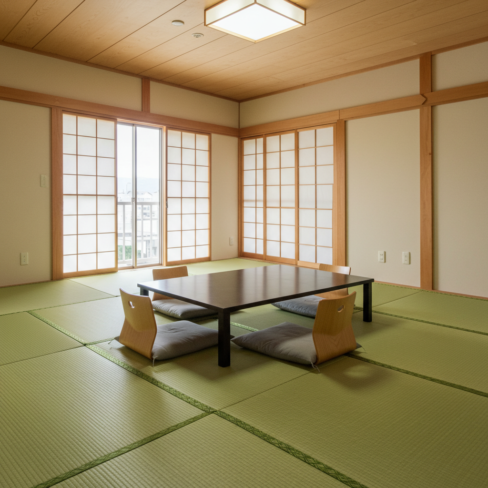
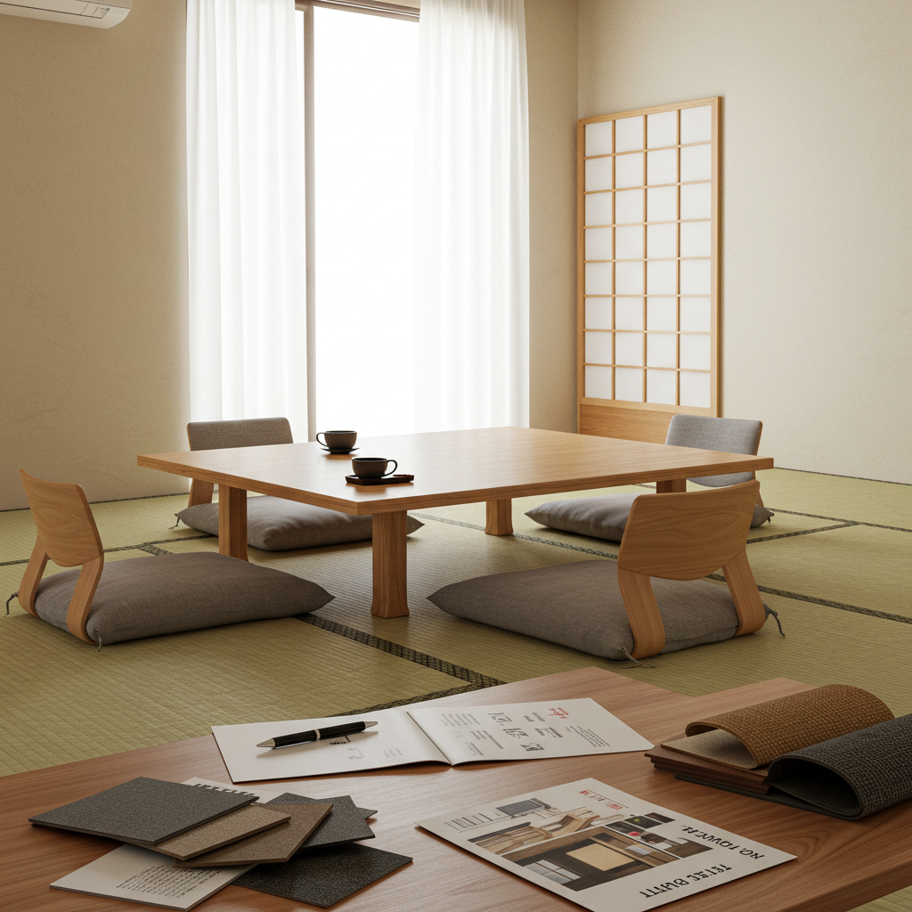
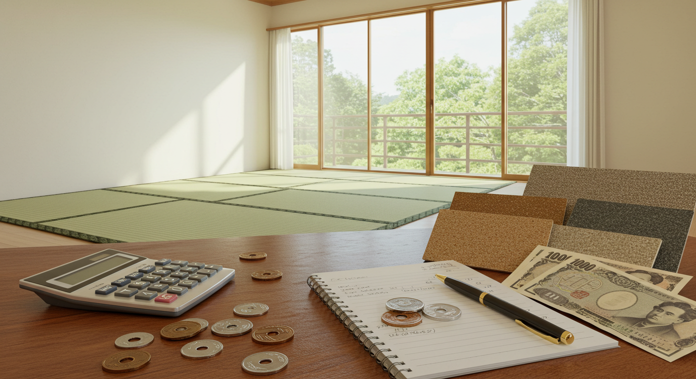
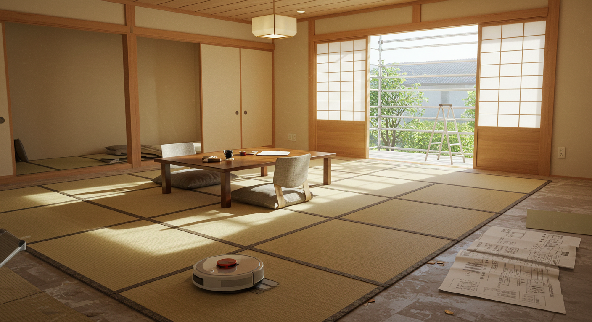
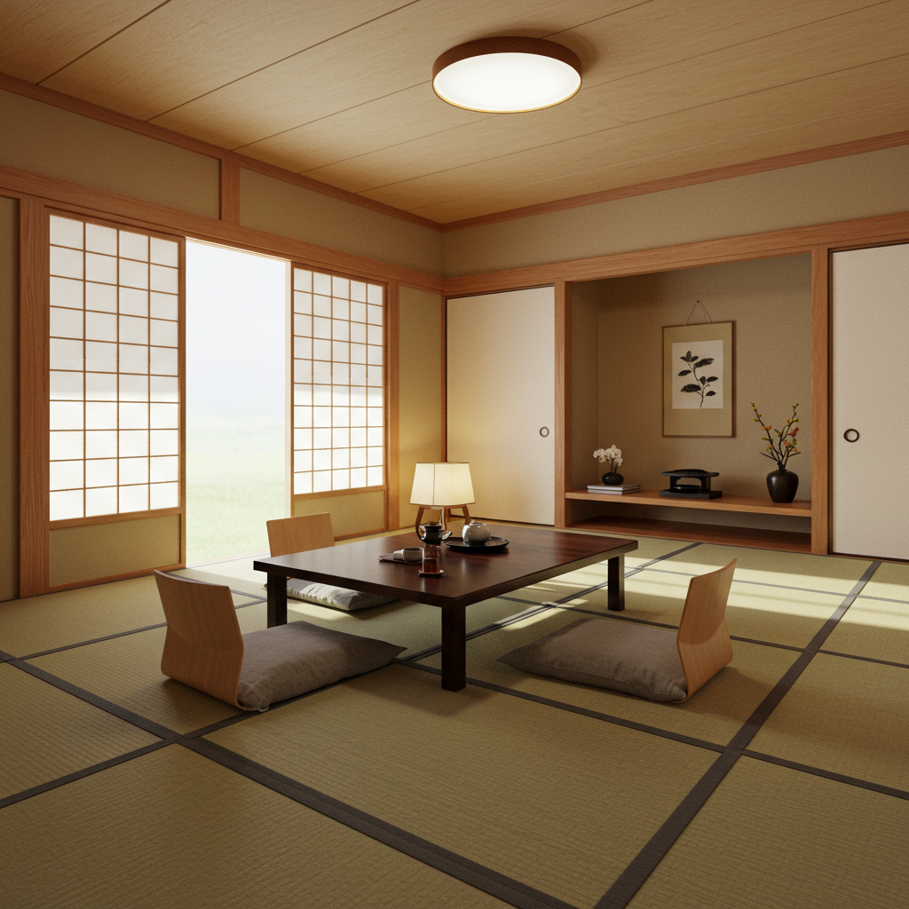
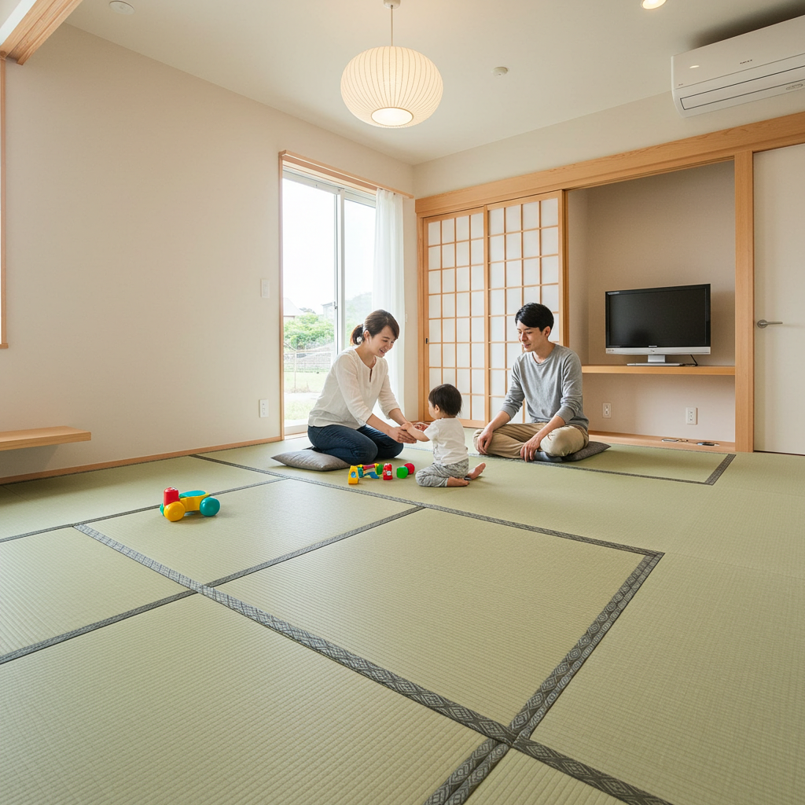
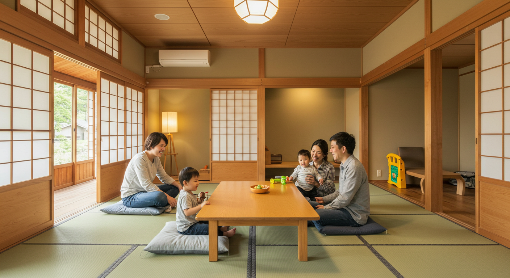

畳リフォームで快適な和室へ！安全・掃除楽々を実現する選び方
導入

日本の住まいに古くから根付いてきた「和室」。その中心にある畳は、い草の香りに包まれて心からリラックスできる、私たちにとって特別な空間です。ゴロンと寝転がれば、ふわりと柔らかく体を受け止め、夏はひんやりと涼しく、冬はフローリングのような底冷えを感じさせない。畳は、日本の気候風土に適した、まさに天然の快適素材と言えるでしょう。
しかし、そんな魅力あふれる畳も、年月とともに少しずつ変化していきます。「畳の色が褪せて、ささくれが服につくようになった」「飲み物をこぼしたシミが取れない」「なんだか部屋が古ぼけた印象になってしまった」…そんなお悩みを感じてはいませんか？あるいは、お子様が生まれたご家庭では、「ハイハイする赤ちゃんのために、もっと衛生的で安全な床にしたい」「走り回っても大丈夫なように、衝撃を吸収してくれる床がいいな」と考えることもあるかもしれません。
畳が古くなると、見た目の問題だけでなく、ダニやカビが発生しやすくなるなど、衛生面での心配も出てきます。また、表面のささくれは、小さなお子様やペットにとって思わぬ怪我の原因になることも。
こうしたお悩みを解決し、和室を再び心地よい空間へと生まれ変わらせるのが「畳リフォーム」です。畳リフォームと一言でいっても、その方法は一つではありません。畳の表面だけを新しくする「表替え」、今ある畳を裏返して使う「裏返し」、畳そのものを丸ごと交換する「新調」、さらには思い切って畳からフローリングへ変更する方法まで、様々な選択肢があります。
この記事では、あなたの和室を「安全で、お掃除がしやすく、そして心からくつろげる快適な空間」にするための、畳リフォームの全てを、一つひとつ丁寧に、そして分かりやすく解説していきます。リフォームの種類ごとの特徴や費用相場はもちろん、後悔しないための注意点、信頼できる業者の選び方、そして特に小さなお子様がいるご家庭にぴったりの素材選びまで、幅広くご紹介します。
「リフォームは初めてで、何から始めたらいいかわからない」という方も、どうぞご安心ください。この記事を読み終える頃には、ご自身のライフスタイルや和室の状態に合った最適なリフォーム方法がきっと見つかるはずです。さあ、一緒に快適な和室づくりの第一歩を踏み出しましょう。
畳リフォームの種類と特徴｜和室を快適に変える選択肢

畳リフォームを考え始めたとき、まず知っておきたいのが、どのような方法があるのかということです。畳の状態やご予算、そしてこれから和室をどのように使っていきたいかによって、最適な選択肢は変わってきます。ここでは、代表的な5つのリフォーム方法について、それぞれの特徴やメリット・デメリットを詳しく見ていきましょう。
種類１．表替え：畳表だけを交換する方法
「表替え（おもてがえ）」は、現在使用している畳の土台部分である「畳床（たたみどこ）」はそのままに、表面のゴザ部分である「畳表（たたみおもて）」と、畳の縁（へり）を新しく交換する方法です。畳の芯材はまだしっかりしているけれど、表面が日焼けで色褪せたり、擦り切れてささくれ立ったりしている場合に適しています。
表替えのメリット
表替えの最大のメリットは、畳を丸ごと新しくする「新調」に比べて、費用を抑えられる点です。畳床を再利用するため、材料費や処分費を節約できます。また、作業時間も比較的短く、朝に畳を引き取ってもらい、その日の夕方には新しい畳が敷き戻されるという、1日で完了するケースがほとんどです。家具の移動なども短時間で済むため、生活への影響を最小限に抑えたい方にもおすすめです。
新しいい草の香りが部屋いっぱいに広がり、まるで新築の和室のような清々しい空間へと生まれ変わります。畳表のデザインや素材、縁の色や柄を変えることで、お部屋の雰囲気をガラリと変えることも可能です。例えば、伝統的な和柄の縁から、モダンな無地の縁に変えるだけで、和室全体が洗練された印象になります。
表替えのデメリットと注意点
表替えは、畳床の状態が良いことが前提となります。畳の上を歩いたときに、フカフカと沈むような感触があったり、凹凸が目立ったり、湿気でカビ臭さが感じられたりする場合は、畳床が劣化している可能性が高いです。この場合、表面だけを新しくしても、根本的な解決にはならず、快適な使い心地は得られません。業者による現地調査の際に、畳床の状態をしっかりと確認してもらうことが重要です。もし劣化が進んでいる場合は、後述する「新調」を検討する必要があります。
表替えのタイミングの目安
一般的に、表替えのタイミングは、前回の交換から5年～7年程度が目安とされています。ただし、使用頻度や日当たりの良さ、お部屋の湿度などによって劣化の進み具合は変わります。表面のささくれが目立つ、汚れやシミが落ちない、い草の色が茶色っぽく変色してきた、といったサインが見られたら、表替えを検討する時期と言えるでしょう。
種類２．裏返し：畳表を裏返して再利用する方法
「裏返し（うらがえし）」は、現在使っている畳表を取り外し、それを裏返して再び張り直す方法です。畳の縁は新しく交換します。畳表は両面使えるように織られているため、日焼けや摩耗の影響を受けていない裏面を表面として再利用することができるのです。
裏返しのメリット
裏返しは、畳リフォームの中で最も手軽で経済的な方法です。新しい畳表を購入する必要がないため、費用を大幅に抑えることができます。表替えと同様に、作業も1日で完了することが多く、気軽に和室の見た目をリフレッシュできるのが大きな魅力です。まだきれいな裏面を使うことで、新品同様の青々とした畳の風合いを取り戻し、い草の香りも再び感じられるようになります。
裏返しのデメリットと注意点
裏返しができるのは、いくつかの条件を満たしている場合に限られます。まず、畳表に深い傷や落ちないシミが裏面まで達していないことが重要です。例えば、飲み物をこぼしてしまい、シミが裏側まで染み込んでしまっている場合は、裏返してもシミが見えてしまうため適していません。
また、裏返しができるのは、前回の表替えや新調から3年～5年以内が目安です。それ以上時間が経つと、裏面も湿気や経年により変色してしまっていることが多く、裏返してもきれいな緑色にならない場合があります。さらに、一度裏返しを行った畳表は、再度裏返すことはできません。次にリフォームする際は、表替えか新調を選ぶことになります。
品質の低い畳表の中には、そもそも両面使用を想定していないものもあるため、すべての畳で裏返しが可能というわけではありません。リフォームを依頼する業者に、自宅の畳が裏返し可能かどうかを判断してもらう必要があります。
裏返しのタイミングの目安
新しく畳を入れてから、あるいは表替えをしてから3年～5年が経過し、表面の色褪せは気になるけれど、大きな傷や汚れはない、という状態が裏返しのベストタイミングです。この時期を逃すと、裏面も劣化が進んでしまうため、早めの検討がおすすめです。
種類３．新調：畳本体を全て交換する方法
「新調（しんちょう）」は、畳の土台である「畳床」、表面の「畳表」、そして「畳縁」のすべてを新しく作り替える方法です。文字通り、畳を丸ごと新品に交換するリフォームです。
新調のメリット
新調の最大のメリットは、和室の機能性と快適性を根本から改善できる点にあります。長年使用して劣化した畳床を交換することで、歩いたときのフカフカ感や凹凸がなくなり、しっかりとした安定感のある踏み心地が蘇ります。畳床は、断熱性や吸湿性、防音性といった畳の持つ重要な機能を担っている部分です。これを新しくすることで、夏は涼しく冬は暖かい、快適な室内環境を取り戻すことができます。
また、最近では、伝統的な稲わらを圧縮した「わら床」だけでなく、木材のチップを圧縮したインシュレーションボードとポリスチレンフォームなどを組み合わせた「建材床」も主流になっています。建材床は、わら床に比べてダニやカビが発生しにくく、軽量で断熱性に優れているという特徴があります。新調する際には、こうした機能性の高い畳床を選ぶことで、より衛生的で快適な和室を実現できます。
もちろん、畳表や縁もすべて新しくなるため、見た目も香りも一新され、和室全体が明るく清々しい空間に生まれ変わります。
新調のデメリットと注意点
新調は、畳を構成するすべての部材を新しくするため、表替えや裏返しに比べて費用が高くなります。また、古い畳を処分するための費用が別途必要になる場合がほとんどです。工期も、部屋の採寸から新しい畳の製作、設置まで含めると数日かかることがあります。
新調のタイミングの目安
一般的に、畳を新調する目安は10年～20年程度と言われています。以下のようなサインが見られたら、新調を検討する時期です。
- 畳の上を歩くと、特定の部分が大きくへこんだり、ギシギシと音がしたりする。
- 畳と畳の間に大きな隙間ができてしまっている。
- 湿気が多く、畳からカビ臭いにおいがする。
- ダニの発生がひどく、掃除をしても改善されない。
- 前回の交換から10年以上経過している。
これらの症状は、畳床の寿命が来ているサインです。表面的なリフォームでは解決できないため、根本的な改善が見込める新調が最適な選択となります。
種類４．畳からフローリングへ変更するリフォーム
和室の用途を大きく変えたい場合や、洋風のインテリアに統一したい場合には、畳を撤去してフローリングに張り替えるリフォームも人気のある選択肢です。
フローリングへ変更するメリット
フローリングの最大のメリットは、掃除のしやすさとメンテナンスの手軽さです。畳のように目に沿って掃除機をかける必要がなく、食べ物や飲み物をこぼしてもサッと拭き取ることができます。ダニが繁殖しにくい素材であるため、アレルギーが心配な方や小さなお子様がいるご家庭にも安心です。
また、重い家具を置いても跡が残りにくいため、ベッドやデスク、本棚などを自由に配置でき、部屋のレイアウトの自由度が高まります。和室を子供部屋や書斎、寝室として使いたい場合に非常に便利です。デザインや色のバリエーションも豊富で、お部屋のインテリアに合わせた空間づくりを楽しめます。
フローリングへ変更するデメリットと注意点
畳からフローリングへの変更は、比較的大掛かりな工事となるため、費用も工期も畳のリフォームより多くかかります。畳を剥がした後の床の下地調整が必要になるケースがほとんどで、畳の厚みとフローリング材の厚みが異なるため、床の高さを調整する工事が発生します。下地の状態によっては、補修や補強が必要になり、追加費用がかかることもあります。
また、畳が持っていた防音性や衝撃吸収性は失われます。特にマンションなどの集合住宅では、階下への足音や生活音が響きやすくなるため、防音性能の高いフローリング材を選んだり、防音マットを敷いたりするなどの対策が重要になります。冬場は足元が冷えやすく、硬い素材のため転倒した際の衝撃も大きくなる点も考慮しておく必要があります。
種類５．その他の畳リフォーム（縁なし畳、カラー畳など）
伝統的な縁のある畳だけでなく、現代のライフスタイルやインテリアに合わせた新しいタイプの畳も数多く登場しています。これらを取り入れることで、和室の可能性はさらに広がります。
縁なし畳（琉球畳）
縁なし畳は、その名の通り、畳の縁がない正方形の畳です。半畳サイズのものが多く、市松模様のように畳の目の向きを互い違いに敷き詰めることで、光の反射が変わり、モダンでスタイリッシュな空間を演出できます。和室だけでなく、リビングの一角に和のスペースを作る「畳コーナー」などにも人気です。すっきりとした見た目は、洋風のインテリアとも相性が良く、和モダンな雰囲気を作り出したい方に最適です。
カラー畳
従来のい草の緑色だけでなく、様々な色の畳表も開発されています。素材は、耐久性や撥水性に優れた和紙や樹脂（ポリプロピレンなど）が使われることが多く、ピンク、ブルー、グレー、ブラックなど、豊富なカラーバリエーションから選ぶことができます。インテリアのアクセントとして特定の色を取り入れたり、2色を組み合わせて個性的なデザインを楽しんだりすることも可能です。色褪せしにくく、お手入れが簡単なのも魅力の一つです。
置き畳（ユニット畳）
フローリングの部屋に手軽に和の空間を作りたい場合に便利なのが「置き畳」です。フローリングの上に置くだけで設置でき、工事は一切不要です。必要な時にだけ敷いて、使わないときは収納することもできます。子供の遊び場スペースとして、あるいはちょっとしたお昼寝スペースとしてなど、多目的に活用できます。軽量で滑り止めが付いているものが多く、安全性にも配慮されています。
これらの新しいタイプの畳は、従来の和室のイメージを刷新し、より自由で個性的な空間づくりを可能にしてくれます。ご自身の好みやライフスタイルに合わせて、最適なリフォーム方法を選んでみてください。
畳リフォームのメリット｜安全で清潔な暮らしを実現
畳のリフォームは、単に古くなった和室をきれいにするだけではありません。そこには、私たちの暮らしをより安全で、清潔で、そして心豊かなものにしてくれる、たくさんのメリットが隠されています。ここでは、畳リフォームがもたらす具体的な4つのメリットについて、詳しくご紹介します。
メリット１．安全性の向上：衝撃吸収性で子どもも安心
日々の暮らしの中で、住まいの安全性は非常に重要な要素です。特に、小さなお子様やご高齢の方がいるご家庭では、転倒時のリスクを少しでも減らしたいと考えるのは当然のことでしょう。畳は、その点で非常に優れた床材です。
畳が持つ天然のクッション性能
畳の内部構造、特に伝統的な「わら床」は、乾燥させた稲わらを何層にも重ねて圧縮して作られています。この構造が、適度な弾力性と空気層を生み出し、天然のクッションのような役割を果たします。フローリングのような硬い床に比べて、畳の上で転んだ場合、衝撃が大きく緩和されるのです。
例えば、よちよち歩きを始めたばかりの赤ちゃんがバランスを崩して尻もちをついてしまったり、元気いっぱいに走り回るお子様が転んでしまったりした時でも、畳であれば大きな怪我につながるリスクを軽減できます。この衝撃吸収性は、足腰への負担を和らげる効果もあるため、長時間立ったり座ったりする際の体の負担も少なくなります。ご高齢の方が万が一転倒してしまった場合にも、骨折などの重大な事故を防ぐ助けとなります。
リフォームでさらに高まる安全性
畳を新調する際には、この安全性をさらに高める選択肢があります。最近では、従来のわら床に加えて、ポリスチレンフォームなどのクッション材を挟み込んだ、より衝撃吸収性の高い畳床も開発されています。これらの高機能な畳を選ぶことで、さらに安心して過ごせる空間を作ることができます。
また、古い畳は、表面のささくれが原因で、素足で歩いたときにトゲが刺さってしまうことがあります。特にハイハイをする赤ちゃんにとっては、手や膝を傷つける原因にもなりかねません。畳をリフォームし、滑らかで新しい畳表に交換することで、こうした日常に潜む小さな危険も取り除くことができるのです。家族みんなが裸足で安心してくつろげる空間、それこそが畳リフォームがもたらす大きな安全というメリットです。
メリット２．掃除のしやすさ：日々の手入れが楽に
「畳は手入れが大変そう」というイメージをお持ちの方もいらっしゃるかもしれません。しかし、新しい畳や近年の高機能な畳は、実はお手入れがとても簡単で、日々の掃除の負担を大きく軽減してくれます。
新しい畳は汚れにくい
新品のい草の畳表は、表面が天然の油分でコーティングされており、撥水性があります。そのため、お茶やジュースなどをこぼしてしまっても、すぐに乾いた布で拭き取れば、シミになりにくいという特徴があります。時間が経って古くなった畳は、この油分が失われ、ささくれ立った繊維の隙間に水分や汚れが染み込みやすくなってしまいます。リフォームで畳を新しくすることは、この「汚れにくさ」を取り戻すことにつながるのです。
掃除機をかける際も、新しい畳は表面が滑らかなため、ホコリや髪の毛をスムーズに吸い取ることができます。畳の目に沿って優しく掃除機をかけるだけで、日常の掃除は完了です。
お手入れが格段に楽になる新素材の畳
さらに、近年ではお手入れのしやすさを追求した新素材の畳が人気を集めています。
- 和紙畳：和紙をこより状にして樹脂でコーティングした素材で作られています。い草に比べて耐久性が非常に高く、ささくれや毛羽立ちがほとんど発生しません。撥水加工が施されているため、水汚れに強く、カビやダニの発生も抑制します。日焼けによる変色も少ないため、長期間にわたって美しい状態を保つことができます。
- 樹脂畳（ポリプロピレン畳など）：樹脂を主原料として作られた畳で、こちらも高い耐久性と優れた撥水性が特徴です。水拭きができるため、お子様の食べこぼしやペットの汚れなども簡単にお手入れできます。カラーバリエーションが豊富なため、インテリアに合わせて選べるのも魅力です。
これらの新素材の畳を選べば、「畳はすぐに汚れる、手入れが大変」という悩みから解放され、いつでも清潔な和室を保つことができます。忙しい毎日の中でも、掃除の負担を減らし、心にゆとりをもたらしてくれるでしょう。
メリット３．衛生面の改善：ダニやカビの抑制
畳の部屋で気になることの一つが、ダニやカビといった衛生面の問題です。特に、湿気の多い梅雨の時期や、アレルギーをお持ちの方がいるご家庭では、切実な悩みではないでしょうか。畳リフォームは、こうした衛生環境を根本から改善する絶好の機会です。
ダニ・カビが発生する原因
畳にダニやカビが発生しやすいのは、畳が湿気を吸いやすい性質を持っていることと、ダニのエサとなるフケやアカ、食べこぼしなどが畳の目にたまりやすいことが原因です。特に、畳床まで湿気が浸透し、畳全体がジメジメした状態が続くと、ダニやカビにとって絶好の繁殖環境となってしまいます。長年使用して古くなった畳は、内部にホコリや湿気が蓄積しやすいため、より注意が必要です。
リフォームによる衛生環境の改善
畳を新調することで、畳内部に潜んでいたダニやカビ、ホコリを根本から一掃することができます。新しい畳に交換するだけでも衛生状態は大きく改善されますが、素材選びを工夫することで、さらにダニやカビの発生しにくい環境を作ることが可能です。
前述の和紙畳や樹脂畳は、い草と違って湿気を吸収しにくく、ダニのエサとなる有機物も少ないため、ダニやカビの繁殖を大幅に抑制できます。また、畳床にも、湿気に強く、ダニが発生しにくいインシュレーションボードとポリスチレンフォームを組み合わせた「建材床」を選ぶのがおすすめです。多くの畳店では、防虫・防カビ加工が施された畳表や畳床も取り扱っています。
さらに、畳を新調する際に、専門業者が床下の状態を確認してくれることもあります。もし床下に湿気の原因がある場合は、換気扇の設置や調湿材の敷設といった対策を提案してくれることも。このように、畳リフォームは、単に畳を交換するだけでなく、和室全体の衛生環境を見直し、改善するためのトータルなアプローチを可能にしてくれるのです。
メリット４．和室の雰囲気を一新し快適さアップ
畳リフォームがもたらすのは、安全性や衛生面の向上だけではありません。和室の見た目を美しくし、空間全体の雰囲気を一新することで、私たちの心にも良い影響を与えてくれます。
い草の香りがもたらすリラックス効果
新しい畳の最大の魅力の一つは、何といってもその清々しい「い草の香り」です。この香りの主成分には、「フィトンチッド」や「バニリン」などが含まれており、森林浴と同じようなリラックス効果や鎮静効果があることが科学的にも分かっています。新しい畳の部屋で深呼吸をすれば、日々のストレスが和らぎ、心が落ち着くのを感じられるでしょう。この香りの効果は、畳が新しいうちが最も強く感じられます。リフォームは、この特別な癒やしの空間を再び手に入れる絶好の機会なのです。
空間を明るく、広く見せる効果
日焼けして茶色っぽくなった畳を、青々とした新しい畳に交換するだけで、和室全体が驚くほど明るい印象に変わります。部屋が明るくなると、視覚的に広く感じられる効果もあります。畳の色は、空間の印象を大きく左右する要素なのです。
インテリアに合わせて自由な空間づくり
最近では、畳のデザインも多様化しており、インテリアの一部として積極的に楽しむことができます。
- 縁のデザイン：畳の縁は、伝統的な和柄から、花柄、動物柄、そしてシンプルな無地のものまで、数え切れないほどのデザインがあります。壁紙や襖の色とコーディネートしたり、アクセントとして個性的な柄を選んだりすることで、お部屋の印象を大きく変えることができます。
- 縁なし畳：正方形の縁なし畳を市松敷きにすれば、一気にモダンで洗練された空間になります。洋室との続き間やリビングの一角に設ける畳コーナーにも最適で、和と洋が融合したおしゃれなインテリアを実現できます。
- カラー畳：桜色、若草色、墨色、栗色など、豊富なカラーバリエーションから選べるカラー畳を使えば、より個性的な和室づくりが可能です。落ち着いたアースカラーで統一すればシックな空間に、明るい色をアクセントに使えば遊び心のある空間にと、思いのままに演出できます。
畳リフォームを通じて、和室をただの「古い部屋」から、家族が集うお気に入りの「癒やしの空間」へと生まれ変わらせることができるのです。
畳リフォームのデメリットと注意点｜後悔しないためのポイント

畳リフォームは多くのメリットをもたらしてくれますが、計画を進める上では、いくつかのデメリットや注意点も理解しておくことが大切です。事前にこれらを知っておくことで、予期せぬトラブルを避け、満足のいくリフォームを実現することができます。ここでは、後悔しないために押さえておきたいポイントを具体的に解説します。
デメリット１．費用と工期がかかる
畳リフォームには、当然ながら費用と時間が必要です。どのリフォーム方法を選ぶかによって、その負担は大きく変わってきます。
費用の問題
最も手軽な「裏返し」でも数万円、畳を丸ごと交換する「新調」や「フローリングへの変更」となると、十数万円から数十万円の費用がかかることもあります。特に、高品質ない草や機能性の高い新素材を選んだり、床下の下地補修が必要になったりした場合は、当初の予算を上回る可能性もあります。リフォームを検討する際は、まずご自身の予算を明確にし、複数の業者から見積もりを取って、費用感を把握することが重要です。費用の詳細については、後の章で詳しく解説します。
工期の問題
「裏返し」や「表替え」であれば、多くの場合1日で完了しますが、「新調」の場合は、部屋の採寸から畳の製作、設置まで数日かかることが一般的です。特に、オーダーメイドで畳を製作する場合は、1週間程度の期間を見ておく必要があるかもしれません。
さらに「畳からフローリングへの変更」は、畳の撤去、下地の調整、フローリング材の施工といった工程が必要なため、数日から1週間以上の工期がかかることもあります。工事期間中は、その部屋を使えなくなり、家具の移動も必要になります。また、工事中は騒音やホコリが発生するため、近隣への配慮も忘れてはいけません。リフォーム計画を立てる際には、費用だけでなく、工事期間中の生活への影響も考慮し、無理のないスケジュールを組むことが大切です。
デメリット２．素材によっては手入れが必要
畳を美しい状態で長持ちさせるためには、日頃のお手入れが欠かせません。特に、天然のい草を使った畳は、その特性を理解した上での適切なケアが必要です。
天然い草の手入れ
い草は、湿気を吸ったり吐いたりする「呼吸する素材」です。この調湿機能が和室の快適さを生み出していますが、一方で、湿度が高い状態が続くとカビが発生しやすくなるというデメリットもあります。そのため、天気の良い日には窓を開けて部屋の換気を心がけ、湿気を溜め込まないようにすることが重要です。
また、い草は水分に弱いため、水拭きは基本的にNGです。畳表を傷め、カビの原因になることがあります。掃除は、乾いた雑巾で拭くか、畳の目に沿って優しく掃除機をかけるのが基本です。もし飲み物などをこぼしてしまった場合は、すぐに乾いた布で吸い取り、固く絞った雑巾で叩くように拭き取ります。
新素材の場合
和紙畳や樹脂畳は、い草に比べて耐久性が高く、水拭きも可能など、お手入れが非常に楽なのがメリットです。しかし、だからといって全く手入れが不要というわけではありません。ホコリやゴミが溜まれば衛生的ではありませんし、強い摩擦や鋭利なもので傷がつく可能性はあります。素材の特性に合わせた適切なお手入れを続けることが、長く快適に使うための秘訣です。
デメリット３．専門知識が必要な場合がある
畳のリフォームは、一見すると簡単な作業に見えるかもしれませんが、実は専門的な知識と技術が求められる場面が少なくありません。
正確な採寸と調整
部屋の形は、一見すると四角く見えても、実際には微妙に歪んでいたり、柱の出っ張りがあったりすることがほとんどです。畳は、この部屋の形に合わせて一枚一枚、ミリ単位で採寸し、製作されます。この採寸が不正確だと、畳を敷き詰めたときに隙間ができてしまったり、逆にきつくてうまく収まらなかったりといった問題が発生します。
下地の状態判断
畳を剥がした下（床板）の状態は、実際に見てみないと分かりません。長年の湿気で床板が腐食していたり、シロアリの被害に遭っていたりする可能性もあります。こうした下地の問題を発見し、適切な補修を行うには、建築に関する専門的な知識が必要です。もし下地の問題を放置したまま新しい畳を敷いてしまうと、すぐに畳が傷んだり、建物全体の耐久性に影響を及ぼしたりする危険性もあります。DIYで畳を交換しようと考える方もいるかもしれませんが、こうしたリスクを考えると、やはり経験豊富なプロの業者に任せるのが安心です。
注意点１．畳の処分費用がかかることも
畳を「新調」する場合や「フローリングへ変更」する場合、これまで使っていた古い畳を処分する必要があります。この畳の処分は、一般の家庭ごみとして出すことはできず、専門の業者に依頼するか、自治体のルールに従って粗大ごみとして処分しなければなりません。
多くの場合、リフォームを依頼した業者が古い畳の引き取りと処分を代行してくれますが、その費用はリフォーム料金とは別に見積もられることが一般的です。見積書を確認する際には、「古畳処分費」といった項目が含まれているか、その金額はいくらかを必ずチェックしましょう。処分費用は、1枚あたり1,500円～3,000円程度が相場ですが、業者や地域によって異なります。後から追加料金として請求されて驚くことがないよう、事前に確認しておくことが重要です。
注意点２．賃貸物件の場合は事前に確認を
もしお住まいがマンションやアパートなどの賃貸物件である場合、畳のリフォームを行う前には、必ず大家さんや管理会社に連絡し、許可を得る必要があります。
賃貸物件には「原状回復義務」があり、退去時には入居した時の状態に戻さなければなりません。勝手に畳を交換したり、フローリングに変更したりすると、契約違反となり、退去時に高額な修繕費用を請求される可能性があります。
ただし、畳の経年劣化が著しい場合など、状況によっては大家さん側の負担でリフォームを行ってくれるケースもあります。畳の傷みや汚れが気になったら、まずは大家さんや管理会社に相談してみましょう。その際、どのような状態なのかを写真に撮って見せると、話がスムーズに進みやすくなります。自己判断でリフォームを進めてしまう前に、必ず契約内容を確認し、然るべき相手に相談することを忘れないでください。
畳リフォームの費用相場と内訳｜賢く予算を抑えるコツ

畳リフォームを検討する上で、最も気になるのが「一体いくらかかるのか？」という費用面ではないでしょうか。ここでは、リフォームの種類別の費用相場や費用の内訳、そして賢く予算を抑えるためのポイントについて、詳しく解説していきます。安心してリフォーム計画を進めるために、まずは費用の全体像を掴みましょう。
費用相場１．リフォームの種類別費用相場
畳リフォームの費用は、リフォームの種類、部屋の広さ（畳の枚数）、そして選ぶ畳の素材のグレードによって大きく変動します。ここでは、一般的な6畳の和室をリフォームする場合の費用相場を種類別にご紹介します。
【6畳間の費用相場】
- 裏返し：約24,000円 ～ 42,000円（1枚あたり4,000円～7,000円）
最もリーズナブルな方法です。費用は主に作業費と新しい畳縁の代金です。 - 表替え：約30,000円 ～ 120,000円（1枚あたり5,000円～20,000円）
費用の幅が広いのは、選ぶ畳表のグレードによるものです。- 普及品（中国産い草など）：1枚5,000円～8,000円程度。賃貸住宅などでよく使われます。
- 中級品（中国産高級品、国産い草）：1枚8,000円～15,000円程度。耐久性と価格のバランスが良く、最も一般的なグレードです。
- 高級品（国産ブランドい草など）：1枚15,000円～20,000円以上。い草の質が良く、目が詰まっていて耐久性が高く、香りも豊かです。
- 新調：約60,000円 ～ 240,000円（1枚あたり10,000円～40,000円）
畳床と畳表の両方を新しくするため、費用は高くなります。費用は畳床と畳表の組み合わせによって決まります。- 普及品（建材床＋普及品畳表）：1枚10,000円～18,000円程度。
- 中級品（建材床 or わらサンド床＋中級品畳表）：1枚18,000円～25,000円程度。
- 高級品（高品質わら床＋高級品畳表）：1枚25,000円～40,000円以上。
- 畳からフローリングへ変更：約150,000円 ～ 400,000円
畳の撤去・処分費、下地工事費、フローリング材費、施工費などが含まれます。選ぶフローリング材の種類（複合フローリング、無垢フローリングなど）や、下地の状態によって費用は大きく変動します。 - 縁なし畳（琉球畳）への変更（半畳12枚の場合）
- 表替え：約96,000円～（1枚あたり8,000円～）
- 新調：約144,000円～（1枚あたり12,000円～）
これらの価格はあくまで目安です。正確な費用を知るためには、必ず業者に現地調査を依頼し、詳細な見積もりを取ることが重要です。
費用相場２．費用の内訳と追加料金が発生するケース
業者から提示される見積書には、様々な項目が記載されています。何にいくらかかっているのかを正しく理解するために、主な費用の内訳を知っておきましょう。
【主な費用の内訳】
- 材料費：畳表、畳床、畳縁などの材料の費用です。リフォーム費用の大部分を占めます。
- 施工費（工事費）：畳の製作、交換、設置などを行う職人さんの技術料です。
- 運搬費・出張費：畳の引き取りや納品にかかる運送費や、職人さんの出張費です。「諸経費」としてまとめられている場合もあります。
- 古畳処分費：新調やフローリングへの変更の際に、古い畳を処分するための費用です。
- 下地補修費（必要な場合）：畳を剥がした後の床板が傷んでいる場合に、その補修にかかる費用です。
- 家具移動費（必要な場合）：部屋の中の大きな家具を移動させるための費用です。業者によってはサービスで行ってくれる場合もあります。
【追加料金が発生しやすいケース】
見積もり後に、追加料金が発生する可能性もゼロではありません。どのような場合に追加料金がかかるのかを事前に知っておくと、心の準備ができます。
- 下地に問題が見つかった場合：現地調査の段階では分からなかった床下の腐食やシロアリ被害などが、畳を剥がした後に発見された場合、その補修費用が追加で必要になります。
- 特殊な形状の部屋：部屋に柱の出っ張りがあったり、円形や多角形など特殊な形をしていたりする場合、畳の加工が複雑になるため、追加の加工費がかかることがあります。
- エレベーターのない高層階：エレベーターがなく、階段で畳を搬入・搬出する必要がある場合、階数に応じて追加料金が発生することがあります。
- 見積もりに含まれていない作業を依頼した場合：例えば、「ついでに襖の張り替えもお願いしたい」など、当初の見積もり範囲外の作業を追加で依頼すれば、当然その分の費用が加算されます。
予期せぬ出費を避けるためにも、契約前に「どのような場合に追加料金が発生する可能性がありますか？」と業者に確認しておくと安心です。
費用相場３．費用を抑えるためのポイント（補助金・助成金など）
少しでもリフォーム費用を抑えたいと考えるのは当然のことです。ここでは、賢くコストダウンするためのいくつかのポイントをご紹介します。
１．複数の業者から相見積もりを取る
最も基本的で重要なポイントです。1社だけの見積もりでは、その価格が適正かどうかを判断できません。必ず2～3社以上の業者から見積もりを取り、価格やサービス内容を比較検討しましょう。単に総額が安いかどうかだけでなく、見積もりの内訳が明確か、使用する材料のグレードは同じか、担当者の対応は丁寧か、といった点も総合的に判断することが大切です。
２．リフォームの目的を明確にし、適切なグレードを選ぶ
「来客用の部屋だから見た目を重視したい」「子供が使う部屋だから耐久性と安全性を優先したい」「数年後には引っ越す予定なので、とりあえず安価に済ませたい」など、リフォームの目的によって、最適な畳のグレードは変わってきます。全ての部屋に最高級品を選ぶ必要はありません。用途に合わせてメリハリをつけることで、無駄な出費を抑えることができます。
３．補助金・助成金制度を活用する
お住まいの自治体によっては、住宅リフォームに関する補助金や助成金の制度を設けている場合があります。
- 介護保険の住宅改修費助成：要介護・要支援認定を受けている方がいるご家庭で、バリアフリー化を目的としたリフォーム（例：滑りにくい床材への変更など）を行う場合、費用の一定額が支給されることがあります。畳からフローリングへの変更などが対象になる可能性があります。
- 自治体のリフォーム助成金：子育て世帯支援や省エネ化推進などを目的として、自治体が独自にリフォーム費用の一部を助成する制度です。内容は自治体によって様々なので、お住まいの市区町村のホームページや窓口で確認してみましょう。
これらの制度は、申請期間や条件が定められているため、利用を検討する場合は早めに情報を集めることが重要です。
４．業者のキャンペーンや閑散期を狙う
リフォーム業者によっては、特定の時期にキャンペーンを実施していることがあります。また、一般的にリフォーム業界の繁忙期は春や秋と言われています。逆に、夏や冬などの閑散期には、価格交渉がしやすくなる可能性があります。急ぎでない場合は、こうしたタイミングを狙って相談してみるのも一つの手です。
これらのポイントを参考に、ご自身の予算と希望に合った、賢いリフォーム計画を立ててください。
畳リフォーム作業の流れと期間｜計画から完成までのステップ

畳リフォームを考え始めてから、実際に新しい和室が完成するまでには、いくつかのステップがあります。全体的な流れと、それぞれの段階でかかる期間の目安を把握しておくことで、スムーズに計画を進めることができます。ここでは、一般的な畳リフォームの流れを5つのステップに分けてご紹介します。
流れ１．情報収集と業者選定
【期間の目安：1週間～1ヶ月】
リフォーム成功の第一歩は、しっかりとした情報収集から始まります。まずは、ご自身の和室の現状を把握し、「どのようなリフォームをしたいのか」というイメージを固めましょう。
- 現状の悩み：「畳がささくれている」「シミが気になる」「部屋が暗い印象」など、具体的な問題をリストアップします。
- リフォームの目的：「安全な子供の遊び場にしたい」「モダンな雰囲気に変えたい」「手入れを楽にしたい」など、リフォームによって何を実現したいのかを明確にします。
- 予算の設定：どのくらいの費用をかけられるのか、大まかな予算を決めておきます。
次に、インターネットや雑誌、知人の口コミなどを参考に、リフォームを依頼する業者の候補を探します。畳専門店、リフォーム会社、工務店など、業者の種類は様々です。それぞれの特徴を調べ、自分の希望に合いそうな業者を2～3社リストアップしましょう。この段階で、各社のウェブサイトで施工事例やお客様の声などをチェックしておくと、業者の得意なことや雰囲気を掴むことができます。
流れ２．現地調査と見積もり
【期間の目安：1週間～2週間】
業者を選んだら、電話やウェブサイトのフォームから連絡を取り、現地調査を依頼します。現地調査とは、業者の担当者が実際に自宅を訪問し、リフォーム箇所の状態を確認する作業のことです。
【現地調査で業者が確認すること】
- 部屋の正確な寸法（採寸）
- 畳の現在の状態（畳床のへたり具合、畳表の傷みなど）
- 畳を剥がした下地の状態（可能な範囲で確認）
- 搬入・搬出経路の確認
- 柱の出っ張りなど、部屋の特殊な形状の有無
【現地調査で私たちが伝えること】
この時、ステップ1で考えたリフォームの目的や希望、予算などを担当者に具体的に伝えましょう。
「子供がアレルギー気味なので、ダニが出にくい素材にしたい」
「このカタログにあるような、縁なし畳に興味がある」
「予算は〇〇円以内で収めたい」
といったように、できるだけ詳しく伝えることで、より的確な提案と見積もりを期待できます。サンプルを見せてもらい、実際に色や手触りを確認することも重要です。
現地調査から数日～1週間程度で、業者から見積書が提出されます。複数の業者に依頼した場合は、すべての見積書が出揃った段階で、内容をじっくり比較検討します。
流れ３．契約と日程調整
【期間の目安：数日～1週間】
見積もりの内容に納得し、依頼する業者が決まったら、正式に契約を結びます。契約前には、以下の点を必ず確認しましょう。
- 見積書の内容：工事内容、使用する材料の品番やグレード、数量、単価、総額などが正確に記載されているか。
- 契約書（注文書）：工事の範囲、工期、支払い条件（着手金や残金の支払い時期）、保証内容、クーリングオフ制度に関する記載など、細かい部分まで目を通します。
- 疑問点の解消：少しでも不明な点や不安な点があれば、契約前に必ず担当者に質問し、納得のいく説明を受けましょう。
契約が無事に完了したら、具体的な工事の日程を調整します。工事期間中は部屋が使えなくなるため、ご自身のスケジュールと照らし合わせ、無理のない日程を組みましょう。家具の移動を自分たちで行う場合は、その時間も考慮しておく必要があります。
流れ４．施工開始と完了
【期間の目安：1日～1週間程度】
いよいよリフォーム工事の開始です。工事当日は、職人さんがスムーズに作業できるよう、事前に部屋の片付けや家具の移動を済ませておきましょう。貴重品や壊れやすいものは、別の部屋に移動させておくと安心です。
【リフォーム種類別の工期目安】
- 裏返し・表替え：多くの場合、朝、業者が畳を引き取りに来て、工場で作業を行った後、その日の夕方には新しい畳を納品してくれます。1日で完了することがほとんどです。
- 新調：事前に採寸した寸法に基づいて新しい畳を製作します。製作に数日かかり、設置自体は半日～1日程度で完了します。トータルで2日～1週間程度が目安です。
- 畳からフローリングへ変更：畳の撤去、下地工事、フローリング施工など工程が多いため、3日～1週間以上かかる場合があります。
工事中は、騒音やホコリが出ることがあります。必要に応じて、ご近所への挨拶をしておくと、トラブル防止につながります。
流れ５．引き渡しとアフターケア
【期間の目安：当日】
工事が完了したら、業者の担当者と一緒に仕上がりを確認します。これを「完了検査」や「引き渡し」と呼びます。
【引き渡し時のチェックポイント】
- 畳に傷や汚れ、凹みがないか。
- 畳と畳、畳と壁の間に不自然な隙間がないか。
- 歩いたときに、きしみや浮き上がりがないか。
- 注文した通りの材料（畳表、畳縁）が使われているか。
- 部屋全体がきれいに清掃されているか。
もし何か気になる点があれば、その場で遠慮なく担当者に伝え、修正を依頼しましょう。すべての確認が終わり、納得できたら、工事完了の書類にサインをし、残金の支払いを行います。
最後に、保証書を受け取り、アフターケアの内容（保証期間、保証の対象範囲、不具合があった場合の連絡先など）について説明を受けます。これで、畳リフォームの全工程が完了です。新しい畳のある快適な暮らしが始まります。
失敗しない畳リフォーム業者の選び方｜安心できる依頼先の見極め方

畳リフォームを成功させるためには、どの業者に依頼するかが非常に重要です。技術力や提案力はもちろん、安心して任せられる誠実な業者を選びたいもの。しかし、数ある業者の中から、どうやって信頼できる一社を見つければよいのでしょうか。ここでは、失敗しないための業者選びのポイントを4つの視点から解説します。
選び方１．実績と専門性
まず注目したいのが、その業者が持つ実績と専門性です。畳に関する深い知識と豊富な経験は、質の高いリフォームに直結します。
畳専門店の強み
畳のリフォームを考えるなら、第一の候補となるのが「畳専門店（畳屋さん）」です。彼らは、まさに畳のプロフェッショナル。い草の種類や産地、畳床の構造、最新の素材に至るまで、幅広い知識を持っています。長年の経験で培われた技術力で、部屋の微妙な歪みにも合わせたミリ単位の調整を行い、隙間なく美しく畳を納めてくれます。また、自社で工場を持っている畳店も多く、顧客の細かい要望に柔軟に対応できるのも強みです。畳に関する悩みや疑問に対して、専門的な視点から的確なアドバイスをもらえるでしょう。
リフォーム会社や工務店の特徴
リフォーム会社や工務店は、畳だけでなく、内装全般や住宅設備に関する幅広い工事に対応できるのが特徴です。「畳の交換と合わせて、襖や障子も張り替えたい」「壁紙も新しくして、和室全体をコーディネートしたい」といった、複数の工事をまとめて依頼したい場合には便利です。ただし、実際に畳の施工を行うのは、提携している下請けの畳店であることがほとんどです。そのため、どのような畳店が施工するのか、実績は十分かなどを確認しておくとより安心です。
実績の確認方法
業者のウェブサイトで「施工事例」をチェックするのは非常に有効です。これまでにどのようなリフォームを手がけてきたのか、写真付きで紹介されていることが多く、仕上がりのイメージを掴むのに役立ちます。特に、自分と似たような悩みを持つ人の事例や、好みのデザインの事例があれば、その業者は有力な候補となるでしょう。また、「創業〇〇年」といった歴史の長さや、「畳製作技能士」などの国家資格を持つ職人が在籍しているかどうかも、技術力を判断する一つの目安になります。
選び方２．見積もりの透明性
誠実な業者は、見積書の内容も誠実です。見積書は、単に価格を比較するためだけでなく、その業者の姿勢を見極めるための重要な書類でもあります。
良い見積書の見極め方
信頼できる業者の見積書は、内訳が詳細で分かりやすいのが特徴です。
- 項目が明確：「畳表替え工事一式 〇〇円」といった大雑把な書き方ではなく、「畳表（〇〇産い草・品名〇〇）」「畳縁（品番〇〇）」「施工費」「運搬費」「古畳処分費」など、何にいくらかかるのかが項目ごとに細かく記載されています。
- 数量と単価が記載されている：例えば、「畳表 6枚 × ＠〇〇円 = 〇〇円」のように、数量と単価が明記されていると、価格の根拠が分かりやすく、透明性が高いと言えます。
- 使用する材料が特定できる：使用する畳表の品名や品番、産地などが具体的に記載されているかを確認しましょう。これにより、契約通りの材料が使われることを担保できます。
注意すべき見積書
逆に、内訳が「一式」ばかりで詳細が不明瞭な見積書や、口頭での説明のみで書面を提示しない業者は注意が必要です。後から「これは見積もりに含まれていなかった」と追加料金を請求されるトラブルの原因になりかねません。見積もりの内容で少しでも疑問に思う点があれば、遠慮なく質問しましょう。その際の回答が曖昧だったり、面倒くさそうな態度を取ったりする業者は、避けた方が賢明です。
選び方３．アフターサービスの有無
リフォームは、工事が終わればすべて完了というわけではありません。万が一、施工後に不具合が生じた場合に、きちんと対応してくれるかどうかも、業者選びの重要なポイントです。
保証内容の確認
契約前に、アフターサービスや保証の有無、その内容を必ず確認しましょう。
- 保証期間：施工後、どのくらいの期間、保証が適用されるのか。（例：施工後1年間）
- 保証の対象範囲：どのような不具合が保証の対象になるのか。「畳が浮き上がってきた」「すぐにささくれてきた」など、具体的なケースを確認しておくと安心です。
- 保証書の発行：口約束だけでなく、保証内容を明記した「保証書」を発行してくれるかどうかも確認しましょう。書面で残しておくことで、後のトラブルを防ぐことができます。
「何かあったら、いつでも連絡してくださいね」と親身になってくれる業者であれば、長く安心して付き合うことができます。地域に根ざして長年営業している畳店などは、評判を大切にしているため、アフターサービスもしっかりしていることが多い傾向にあります。
選び方４．複数の業者から相見積もりを取るメリット
面倒に感じるかもしれませんが、「相見積もり（あいみつもり）」を取ることは、業者選びで失敗しないための最も効果的な方法の一つです。相見積もりとは、複数の業者に同じ条件で見積もりを依頼し、比較検討することです。
価格の適正さがわかる
1社だけの見積もりでは、提示された金額が高いのか安いのか、客観的な判断ができません。複数の見積もりを比較することで、そのリフォーム内容の適正な価格相場を把握することができます。極端に高すぎる、あるいは安すぎる業者は、何か理由があるはずです。安すぎる場合は、質の低い材料を使っていたり、必要な工程を省いていたりする可能性もあるため、注意が必要です。
提案内容を比較できる
相見積もりを取ると、各社から様々な提案を受けることができます。A社は耐久性の高い素材を、B社はデザイン性の高い縁を、C社はコストを抑える方法を提案してくれるかもしれません。それぞれの提案を比較することで、自分では思いつかなかったアイデアに出会えたり、自分の希望を最もよく理解してくれる業者を見つけたりすることができます。
担当者の対応を見極められる
見積もりを依頼してから提出されるまでのスピード、質問に対する回答の丁寧さ、専門知識の豊富さなど、担当者の対応も重要な比較ポイントです。リフォームは担当者との二人三脚で進めていくものです。こちらの話を親身に聞いてくれ、信頼できると感じる担当者がいる業者を選ぶことが、満足のいくリフォームにつながります。
これらのポイントを踏まえ、焦らずじっくりと業者を選ぶことが、快適な和室づくりのための鍵となります。
子どもに安心！衝撃吸収性や手入れのしやすさで選ぶ畳の素材の選び方

小さなお子様がいるご家庭では、住まいの安全性や衛生面、そして日々の手入れのしやすさが、何よりも優先されるポイントではないでしょうか。和室をリフォームする際も、これらの点を重視して畳の素材を選ぶことで、お子様がのびのびと、そして親御さんも安心して過ごせる空間を作ることができます。ここでは、子育て世帯に特におすすめの畳の選び方をご紹介します。
選び方１．衝撃吸収性に優れた畳（クッション材入り畳など）
子どもは、走ったり、ジャンプしたり、時には転んだりするのが日常です。そんな元気いっぱいの子どもたちを優しく受け止めてくれるのが、衝撃吸収性に優れた畳です。
クッション材入り畳の構造と効果
畳のクッション性は、主に土台となる「畳床」によって決まります。伝統的な「わら床」も適度な弾力性を持っていますが、より高い衝撃吸収性を求めるなら、「クッション材入り」の畳床がおすすめです。
これは、木材チップを圧縮したインシュレーションボードの間に、ポリスチレンフォームやウレタンフォームといったクッション性の高い素材を挟み込んだ構造になっています。これにより、通常の畳よりもさらに柔らかく、弾力のある踏み心地が実現します。お子様が転倒した際の衝撃を効果的に吸収し、頭や体を打った時のダメージを大幅に軽減してくれます。この性能は、スポーツ施設の柔道場などで使われる畳にも応用されているほどです。
安全性だけでなく、防音効果も
このクッション材は、衝撃だけでなく音も吸収してくれます。お子様が室内で元気に走り回ったり、おもちゃを落としたりした時の「ドタドタ」「ガチャン」という音を階下に伝わりにくくする防音効果も期待できます。特にマンションなどの集合住宅にお住まいの場合、階下への騒音トラブルを気にされる方も多いと思いますが、クッション材入りの畳は、そうした悩みの解決にも一役買ってくれるのです。業者に相談する際には、「子どもが安全に遊べるように、クッション性の高い畳にしたい」と伝え、サンプルなどで実際の柔らかさを確認してみるのが良いでしょう。
選び方２．手入れがしやすい素材（和紙畳、樹脂畳など）
子育て中は、食べこぼしや飲みこぼし、クレヨンでの落書きなど、床が汚れる機会が格段に増えます。「また汚された…」とストレスを感じるのではなく、「サッと拭けば大丈夫」と思える手軽さは、忙しい親御さんにとって大きな味方になります。
和紙畳のメリット
和紙を原料とし、表面を樹脂でコーティングして作られた「和紙畳」は、子育て世帯に非常におすすめの素材です。
- 高い撥水性：表面がコーティングされているため、ジュースやお茶をこぼしても、畳の内部に染み込む前にサッと拭き取ることができます。シミになりにくく、お手入れが非常に簡単です。
- 優れた耐久性：天然のい草に比べて、摩擦に対する強度が数倍高いと言われています。おもちゃを引きずったり、椅子を動かしたりしても傷がつきにくく、ささくれもほとんど発生しません。ハイハイする赤ちゃんの肌を傷つける心配もありません。
- カビ・ダニの抑制：い草と違ってカビの栄養源が少ないため、カビやダニが発生しにくいのも大きな特徴です。衛生的な環境を保ちやすくなります。
- 色褪せしにくい：日焼けによる変色がほとんどないため、家具を動かした跡がくっきり残ることもなく、長期間にわたって美しい見た目を維持できます。
樹脂畳のメリット
ポリプロピレンなどの樹脂を主原料とした「樹脂畳」も、和紙畳と同様に優れた機能性を持っています。
- 水拭きOK：完全な防水素材なので、汚れがひどい時には水拭きや、薄めた中性洗剤を使ったお手入れも可能です。衛生面を特に重視したいご家庭に最適です。
- 豊富なカラーバリエーション：ピンク、イエロー、グリーン、ブルーなど、明るく楽しいカラーが揃っているのも魅力です。子ども部屋をカラフルでポップな空間にしたい場合にもぴったりです。
- 高い耐久性と安全性：和紙畳と同様に耐久性が高く、ささくれの心配もありません。
これらの新素材の畳は、天然い草の風合いとは少し異なりますが、機能性においては子育て世帯の強い味方となってくれます。
選び方３．安全性・衛生面を考慮した畳選びのポイント
目に見える汚れだけでなく、アレルギーの原因となる物質など、目に見えない部分の安全性にも配慮したいものです。畳を選ぶ際には、以下のポイントもチェックしましょう。
低アレルゲン素材
畳のダニは、その死骸やフンがアレルギーの原因（アレルゲン）となることがあります。前述の和紙畳や樹脂畳は、ダニの発生自体を抑制する効果が高いため、アレルギー対策としても有効です。また、業者によっては、アレルギーの原因となる物質を吸着・分解する機能を持つ畳表なども取り扱っている場合があります。アレルギーが心配な方は、こうした機能性畳についても相談してみると良いでしょう。
防ダニ・防カビ加工
畳床や畳表に、あらかじめ防ダニ・防カビ加工が施されている製品を選ぶと、より安心です。ただし、使用されている薬剤の安全性が気になるところ。人体への影響が少ない、安全基準を満たした薬剤が使われているかを確認しましょう。
シックハウス症候群対策
建材に含まれるホルムアルデヒドなどの化学物質が原因で起こるシックハウス症候群も、お子様がいるご家庭では心配です。畳を選ぶ際には、JIS（日本産業規格）やJAS（日本農林規格）が定めるホルムアルデヒドの放散量基準で、最も安全性が高いとされる「F☆☆☆☆（フォースター）」の認定を受けた製品を選ぶようにしましょう。多くの国内メーカーの製品はこの基準をクリアしていますが、念のため業者に確認するとより安心です。
選び方４．フローリングへの変更で得られる安全性と手入れのしやすさ
和室の用途を大きく変え、子ども部屋やプレイルームとして活用したい場合には、思い切ってフローリングに変更するリフォームも有効な選択肢です。
フローリングのメリット
- 掃除のしやすさ：畳の目のような凹凸がないため、掃除機がけがスムーズで、食べこぼしなども簡単に拭き取れます。液体をこぼしても染み込む心配がありません。
- ダニの発生しにくさ：フローリング自体はダニが繁殖しにくい素材です。ホコリが溜まっても目に見えやすく、掃除がしやすいため、衛生的な環境を保ちやすいと言えます。
- レイアウトの自由度：学習机やベッド、おもちゃ箱など、重い家具を気兼ねなく置くことができます。お子様の成長に合わせて部屋のレイアウトを自由に変更できるのは大きなメリットです。
フローリングのデメリットと対策
一方で、フローリングには硬くて冷たい、音が響きやすいといったデメリットもあります。しかし、これらは工夫次第でカバーすることが可能です。
- 硬さ・冷たさ対策：転倒時の衝撃を和らげ、冬場の冷たさを軽減するために、クッション性の高いマットやコルクマット、ジョイントマットなどを敷くのがおすすめです。汚れた部分だけを取り外して洗えるジョイントマットは、特に小さなお子様がいるご家庭で重宝します。
- 防音対策：階下への音漏れが気になる場合は、遮音性能の高いフローリング材を選ぶか、防音マットを敷いた上にフローリングを施工するなどの対策が有効です。
畳の温かみを活かすか、フローリングの機能性を取るか。お子様の年齢や性格、和室の主な使い方などを考慮して、ご家庭に最適な選択をしてください。
畳リフォームで家族みんなが快適に暮らせる和室へ

この記事では、畳リフォームの種類から費用、業者の選び方、そしてご家庭の状況に合わせた素材選びまで、快適な和室を実現するための情報を網羅的にご紹介してきました。
畳が古くなって気になっていた方も、リフォームによって和室が生まれ変わる具体的なイメージが湧いてきたのではないでしょうか。畳の表面を新しくする「表替え」や「裏返し」で手軽にリフレッシュする方法。畳そのものを交換して機能性を根本から改善する「新調」。そして、ライフスタイルの変化に合わせて「フローリング」へと変更する選択肢。さらには、「縁なし畳」や「カラー畳」で、和室をもっと自由でおしゃれな空間に変えることもできます。
畳リフォームは、単に見た目をきれいにするだけではありません。
新しい畳は、ダニやカビの発生を抑え、アレルギーが心配なご家族にも安心な衛生的な環境をもたらします。
その適度な弾力性は、万が一の転倒時にも衝撃を和らげ、元気いっぱいのお子様やご高齢の方を見守る安全な暮らしを実現します。
撥水性に優れた新素材を選べば、日々の掃除の負担がぐっと軽くなり、忙しい毎日に心のゆとりを与えてくれます。
そして何より、新しくなった和室に広がるい草の香りは、家族みんなの心を解きほぐし、かけがえのない癒やしの時間を演出してくれるでしょう。
リフォームを成功させる鍵は、ご自身の暮らしに合った最適な方法を見つけること、そして、その想いを形にしてくれる信頼できるパートナー（業者）と出会うことです。そのためには、まず複数の業者から話を聞き、見積もりを比較することから始めてみてください。
さあ、あなたの家の和室も、家族みんなが集い、心からくつろげる、お気に入りの場所に生まれ変わらせてみませんか。この記事が、その素晴らしい一歩を踏み出すための、確かな道しるべとなれば幸いです。